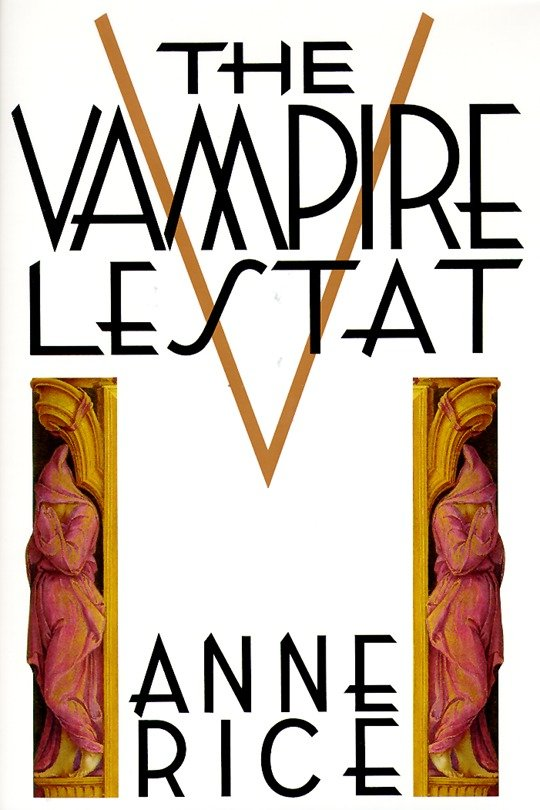
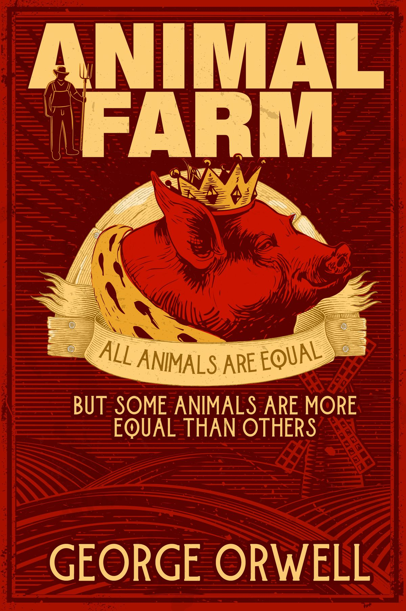

Assignment 4.2: Build a Web Page Exercise - Part 4
While a major antagonist in Interview with the Vampire, it's here in the sequel that Lestat takes center stage (literally) as the more sympathetic antihero readers are drawn towards.

(author: Anne Rice)
A Timeless Dystopian Political Allegory From the Author of 1984. Though taking place quite literally on a farm it has a lot to say about the human condition and the nature of power.

(author: George Orwell)
This Game of Thrones prequel reads much like an actual history book, beginning with Aegon the Conqueror and following the dynasty through the Dance of the Dragons, a brutal civil war among siblings.